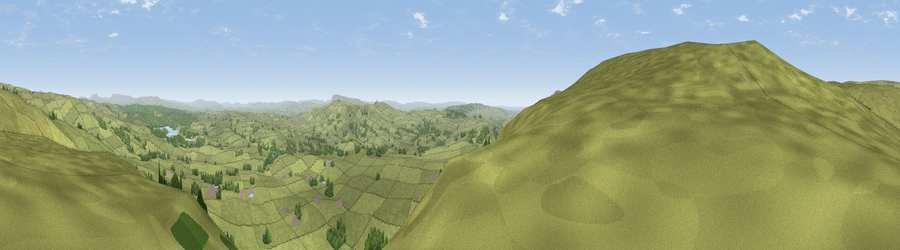

Viewpoint near Slaidburn
#6121 in England · top 12% of its area beats it · near SlaidburnThe view, rendered

A 360° render of this exact spot computed from the terrain model, tree cover and land cover — summer colours, afternoon light, calibrated against photographs of famous viewpoints. Real trees, hedges and buildings will differ in detail.
The panorama
Grey silhouette: terrain skyline in each direction (720 bearings, Earth curvature and refraction included). Dashed green: skyline with trees (+15 m) and buildings (+8 m) as obstacles. Blue strip: how far the ground is visible on each bearing.
Where the view opens
Wedge length = distance to the farthest visible ground on that bearing (vegetation-aware). Rings at 10, 25 and 50 km.
What fills the view
83% grassland · 16% woodland
Angular shares of the visible panorama (visual magnitude), not map area. Landscape diversity 0.22 (0–1 Shannon).
Key numbers
More beautiful places nearby
The staircase of upgrades: each row has a higher view potential than everything closer. Driving times are estimates from straight-line distance, calibrated against real road routing — check an actual route before setting out.
| Place | Direction | Drive | Score |
|---|---|---|---|
| Viewpoint near Slaidburn | NNE · 4 km | ~9 min | 70.4 |
| Whins Brow | W · 5 km | ~10 min | 76.3 |
| Viewpoint c9170_7172 | WNW · 11 km | ~20 min | 77.0 |
| Paddy's Pole | SW · 11 km | ~21 min | 77.3 |
| Parlick | SW · 12 km | ~23 min | 77.5 |
| Viewpoint near Quernmore | WNW · 15 km | ~27 min | 78.0 |
| Viewpoint near Scorton | WSW · 17 km | ~30 min | 79.9 |
| Warton Crag | NW · 27 km | ~43 min | 83.2 |
53.97803, -2.48749 · source: screening · position refined by local search. Computed location — check access rights before visiting.